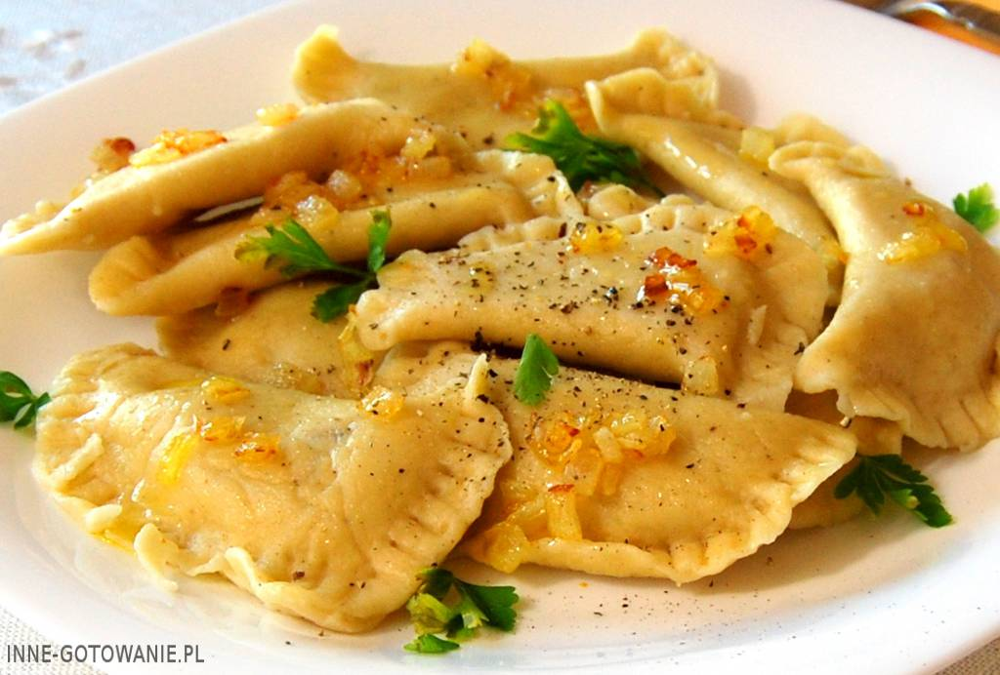

Polish cuisine
Traditional Polish cuisine tends to be hearty, rich in meats, sauces, and vegetables; sides of pickled vegetables are a favorite accompaniment.
A dinner commonly includes the first course of soup, followed by the main course. Among soups, barszcz czerwony (red beet soup, a.k.a. borscht) is perhaps the most recognizable: a spicy and slightly sour soup, served hot. It's commonly poured over dumplings (barszcz z uszkami or barszcz z pierogami), or served with a fried pate roll (barszcz z pasztecikiem). Other uncommon soups include zupa ogórkowa, a cucumber soup made of a mix of fresh and pickled cucumbers; zupa grzybowa, typically made with wild mushrooms; also, flaki or flaczki - well-seasoned tripe.
Pierogi are, of course, an immediately recognizable Polish dish. They are often served along side another dish (for example, with barszcz), rather than as the main course. There are several types of them, stuffed with a mix of cottage cheese and onion, or with meat or even wild forest fruits. Gołąbki are also widely known: they are large cabbage rolls stuffed with a mix of grains and meats, steamed or boiled and served hot with a white sauce or tomato sauce.
Bigos is another unique, if less well-known, Polish dish: a "hunter's stew" that includes various meats and vegetables, on a base of pickled cabbage. Bigos tends to be very thick and hearty. Similar ingredients can also be thinned out and served in the form of a cabbage soup, called kapuśniak. Some Austro-Hungarian imports have also become popular over the years, and adopted by the Polish cuisine. These include gulasz, a local version of goulash that's less spicy than the original, and sznycel po wiedeńsku, which is a traditional shnitzel, often served with potatoes and a selection of vegetables.
When it comes to food-on-the-go, foreign imports tend to dominate (such as kebab or pizza stands, and fast-food franchises). An interesting Polish twist is a zapiekanka, which is an open-faced baguette, covered with mushrooms and cheese (or other toppings of choice), and toasted until the cheese melts. Zapiekanki can be found at numerous roadside stands and bars.
Poland is also known for two unique cheeses, both made by hand in the [Podhale] mountain region in the south. Oscypek is the more famous: a hard, salty cheese, made of unpasteurized sheep milk, and smoked. It goes very well with alcoholic beverages such as beer. The less common is bryndza, a soft cheese, also made with sheep milk (and therefore salty), with a consistency similar to spreadable cheeses. It's usually served on bread, or baked potatoes. Both cheeses are covered by the EU Protected Designation of Origin (like the French Roquefort, or the Italian Parmegiano-Reggiano).